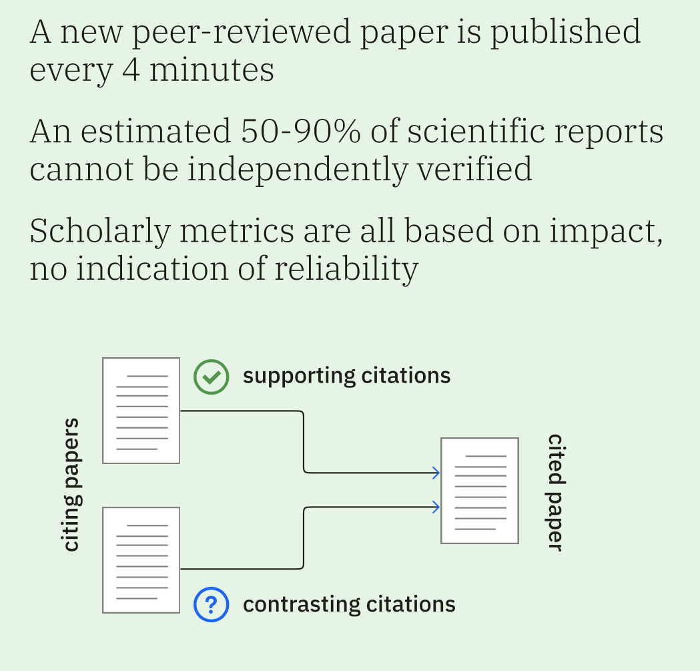

Case studies - Scite
How Scite works:
Scite Smart Citations allow users to see how a scientific paper has been cited by providing the context of the citation. Scite deploys a deep learning model to classify the citation statement as providing supporting or contrasting evidence for the cited claim. It can be used to help audiences discover papers, examine reference contexts, flag retractions, and contributes to academic rigour.
Links to other resources:
-
1. Analyzing more than 1M citations to better understand scientific research on COVID-19.
-
2. 12 preprints on COVID-19 that have been supported or contradicted by subsequent research.
-
5. Karger Publishers and Scite Launch Automated Reference Check Pilot.
-
6. Cabells and scite partner to bring Smart Citations to Journalytics.
-
7. Aries Systems and scite Partner to Evaluate Research Validity of Manuscripts in EM.
-
10. Scite workflow